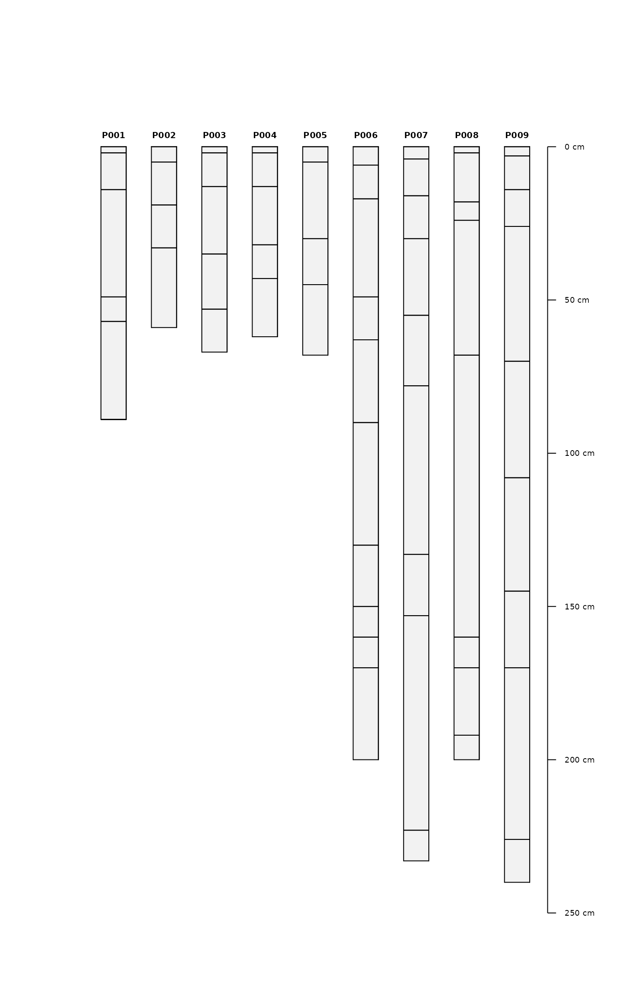

R/SoilProfileCollection-methods.R, R/SoilProfileCollection-setters.R
depths.Rddepths(<data.frame>) <- <formula>: Initialize SoilProfileCollection
depths(<SoilProfileCollection>): Extract profile ID and horizon depths from SoilProfileCollection
# S4 method for SoilProfileCollection
depths(x, hzID = FALSE, ...)
# S4 method for SoilProfileCollection
depths(object) <- value
# S4 method for data.frame
depths(object) <- valueA SoilProfileCollection
Include horizon ID? Usually this is calculated from the (sorted) row index unless hzidname()<- has been called. Default: FALSE
not used
An object to promote to SoilProfileCollection (inherits from data.frame)
A formula specifying the unique profile ID, top and bottom depth column names
a data.frame containing profile ID, top depth, and bottom depth
The input horizon data, and the resulting profile order, is sorted based on unique profile ID and top depth. ID columns are converted to character, depth columns are converted to integer. If NA values exist in all of the top depths, a prototype with 1 horizon per profile ID is returned, with NA in all non-essential columns. If the input object has 0 rows, a prototype with 0 horizons and 0 rows, but same column names as object, is returned.
# load a SoilProfileCollection
data(jacobs2000, package = "aqp")
depths(jacobs2000)
#> id top bottom
#> 1 92-1 0 18
#> 2 92-1 18 43
#> 3 92-1 43 79
#> 4 92-1 79 130
#> 5 92-1 130 153
#> 6 92-1 153 156
#> 7 92-1 156 213
#> 8 92-2 0 18
#> 9 92-2 18 46
#> 10 92-2 46 84
#> 11 92-2 84 122
#> 12 92-2 122 145
#> 13 92-2 145 213
#> 14 92-3 0 15
#> 15 92-3 15 25
#> 16 92-3 25 64
#> 17 92-3 64 84
#> 18 92-3 84 112
#> 19 92-3 112 165
#> 20 92-3 165 175
#> 21 92-4 0 20
#> 22 92-4 20 53
#> 23 92-4 53 79
#> 24 92-4 79 130
#> 25 92-4 130 165
#> 26 92-4 165 185
#> 27 92-4 185 203
#> 28 92-5 0 28
#> 29 92-5 28 61
#> 30 92-5 61 109
#> 31 92-5 109 135
#> 32 92-5 135 183
#> 33 92-6 0 18
#> 34 92-6 18 46
#> 35 92-6 46 76
#> 36 92-6 76 104
#> 37 92-6 104 119
#> 38 92-6 119 168
#> 39 92-7 0 15
#> 40 92-7 15 41
#> 41 92-7 41 48
#> 42 92-7 48 61
#> 43 92-7 61 91
#> 44 92-7 91 132
#> 45 92-7 132 140
#> 46 92-7 140 152
## init SoilProfileCollection objects from data.frame of horizon data
# load demo data
data(sp1)
# promote to SPC
depths(sp1) <- id ~ top + bottom
# plot
plot(sp1)

# number of profiles
length(sp1)
#> [1] 9
# number of horizons
nrow(sp1)
#> [1] 60